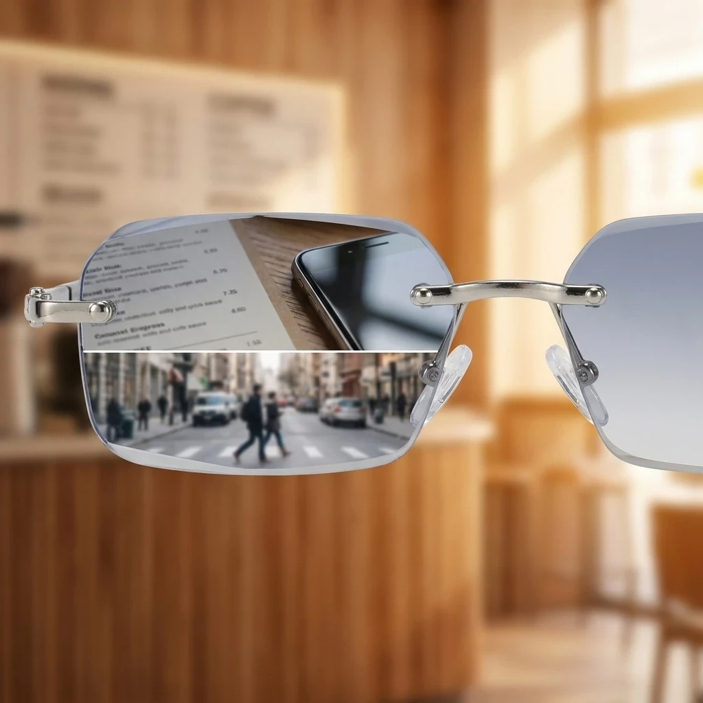
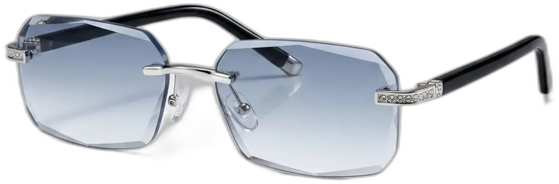
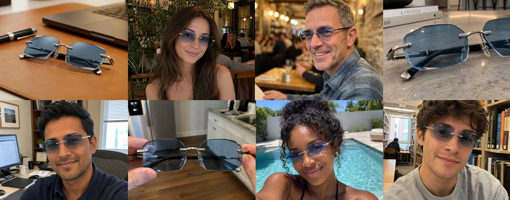

Join Thousands Of Happy Customers
Three Lens
Features in One Lightweight Pair
Read up close, see farther distances, reduce outdoor glare,
and add comfort around screens with one pair that weighs under an ounce.
See Clearly From
Near to Far
Read a menu, check your phone, then view signs farther away with the same pair. Near-to-far lenses cover the changing distances you encounter throughout the day.
"I got rid of my other glasses. With my new glasses, I can read everything, use them for driving my car and for outdoors in the sunlight. So much easier and less costly!"
James R. 57, Verified Customer

Helps Reduce Screen-Related Eye Fatigue
Built-in blue light filtering adds comfort around computers, phones, tablets, and TVs. Read your screen, then view the room through the same lenses.
"These are perfect for my daily walks. The lenses darken on their own so the glare never gets to me. They are so light I keep forgetting I have them on."
Linda S. 39, Verified Customer
Dark Outdoors.
Clear Indoors.
Step outside and the transition lenses automatically darken in bright light. Move back indoors and they return to clear, giving you everyday glasses and sun protection in the same pair.
"These are perfect for my daily walks. The lenses darken on their own so the glare never gets to me. They are so light I keep forgetting I have them on."
Sarah J. 55, Verified Customer
Lightweight Enough for All-Day Wear
At under one ounce, BlueLume Glasses are designed to feel light from morning through evening. No bulky frames. No bag filled with multiple glasses cases.
“I wear them at my desk, around the office, and outside at lunch. They stay comfortable, and I am no longer switching glasses throughout the day.”
David M., 47, Verified Buyer
BlueLume vs Three Separate Pairs
See how BlueLume combines the functions of readers, distance glasses, and sunglasses in one lightweight pair.
 | |||||
Traditional Eyewear | |||||
|---|---|---|---|---|---|
| Reading Up Close | Included | Separate Reading Glasses | |||
| Seeing Farther Away | Included | Separate Distance Glasses | |||
| Bright Outdoor Light | Transition Lenses Darken Outdoors | Separate Prescription Sunglasses | |||
| Screen Use | Built-in Blue Light Filter | Separate Computer Glasses | |||
| Pairs carried each day | 1 Pair | 3 Pairs or More | |||
| Switching Throughout the Day | No Constant Switching | Changing for Different Activities | |||
Try BlueLume Glasses for 90 Days
Wear them while reading, working, running errands, and spending time outside. If you are not satisfied, return them within the trial period for a full refund.
27,392 People Are Seeing More Clearly
| Multi Functionality | 4.9 | |
| Build Quality | 4.8 | |
| Ease of Use | 4.9 | |
| Durability | 4.7 | |
| Value for Money | 4.9 |
4.8
Based on reviews from
27,392+ customers

My Other Pairs Sit in a Drawer Now
I wear these at my desk all day. My eyes feel fine by evening, and the same pair reads my notes and sees clear across the room. I have not swapped glasses in weeks.
No More 4PM Eye Burn
Great value for the price. I live on screens all day and most evenings my eyes feel far less tired since I started wearing these. Worth every penny.

They Turn Into Shades on Their Own
I take long walks now without packing a second pair. The lenses darken into sunglasses the second the sun hits them, then clear when I get home. Total game-changer.
No More Bag of Glasses
Super stylish, and one light pair handles both my reading and my distance vision. No more bag rattling with cases. My friends keep asking where I got them.
One Pair, Morning Run to Movie Night
From morning runs to evening screen time, this one pair keeps up with me all day. Feather-light, and the vision stays crystal clear near and far.
Still Comfortable After a Long Day Wearing them
Comfortable all day, even through back-to-back screen sessions and long stretches of reading. I honestly do not know how I managed before these.
It All Just Happens On Its Own
I walk, I read, and the lenses darken outside then clear back up indoors without me touching a thing. Perfect for my work breaks and the commute home.

I Was Skeptical. Now I Am Sold.
My eyes feel so much better. This one pair cost less than the two I was replacing, and it eases my screen strain every single day.
Frequently Asked Questions
BlueLume combines near-to-far lenses in one pair. Use them to read small print, check your phone, and view road signs. A custom prescription may still be necessary for diagnosed eye conditions or individual vision needs.
Both features are built into the lenses. Blue light filtering adds comfort around screens, while the photochromic coating darkens in sunlight and returns to clear indoors.
No. There is nothing to charge and no batteries to swap. They work the moment you slide them on, ready whenever you are.
Yes. At under one ounce, they feel light on your face and look like regular glasses. You benefit from a slim frame for comfortable wear throughout the day.
Yes. Photochromic lenses darken automatically in sunlight and return to clear indoors. Wear the same pair while walking, commuting, or moving between your desk and outdoors.
You do not need to submit a prescription when ordering BlueLume Glasses. Have a diagnosed eye condition or custom prescription? Ask your eye-care professional whether they suit your vision needs.
Yes. Read documents, work at your screen, and view farther across the office through the same pair. Built-in blue light filtering adds comfort during screen use.
Your order dispatches within two business days. Standard delivery then takes two to three days. You will receive a tracking link by email once your order ships.